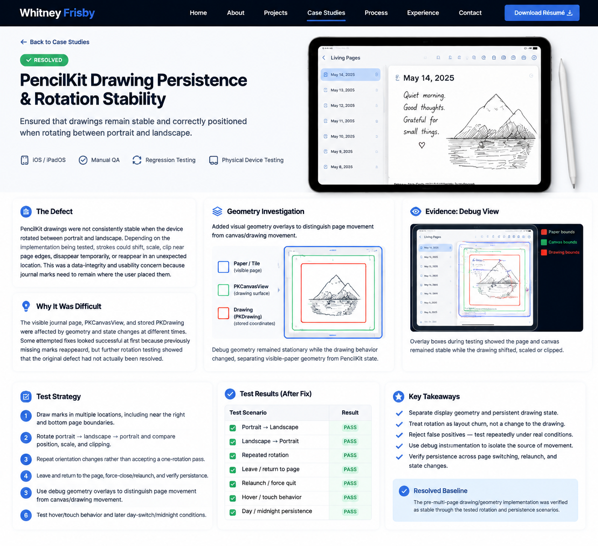
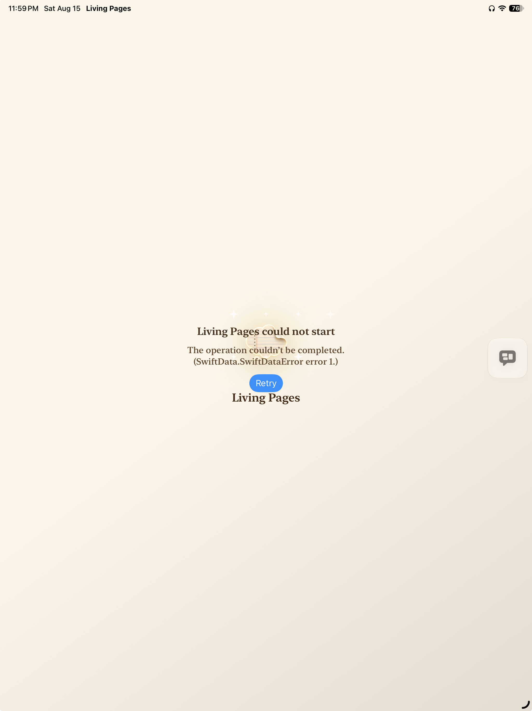
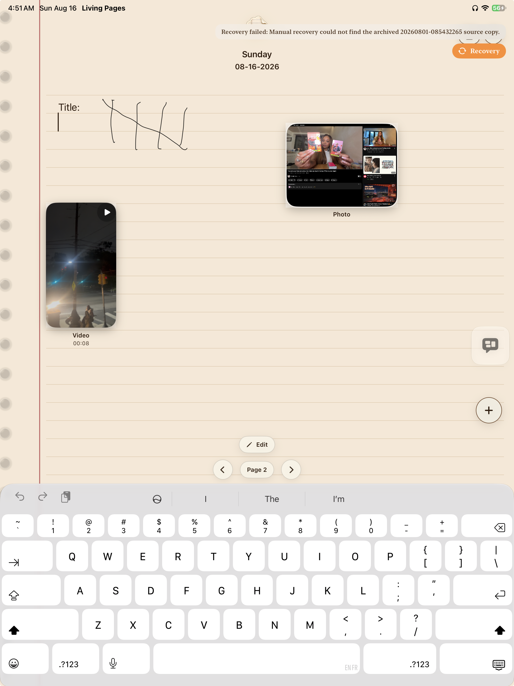

SOFTWARE QA TESTER
AI-Assisted Software Testing
Manual QA
iOS Application Testing
I test software by reproducing problems, analyzing evidence, and verifying solutions across real devices.
About Me
I am a software QA tester focused on manual testing, AI-assisted development workflows, and investigating software behavior through evidence-based problem solving.
My background in security operations taught me how to observe systems, document incidents, identify problems, and communicate findings clearly. I apply those same skills to software quality assurance by reproducing issues, analyzing results, and verifying solutions.
Through my independent iOS/iPadOS application project, Living Pages, I have gained hands-on experience testing SwiftUI applications, SwiftData persistence, PencilKit drawing behavior, and cross-device user experiences.
Technical Skills
Quality Assurance
- Manual Testing
- Functional Testing
- Regression Testing
- Bug Reproduction
- Defect Documentation
- Root Cause Investigation
- Fix Verification
Development & Tools
- Xcode
- Swift / SwiftUI
- SwiftData
- CloudKit
- PencilKit
- Git / GitHub
- iOS & iPadOS Testing
AI-Assisted Workflow
- AI-Assisted Debugging
- Prompt-Based Investigation
- Evaluating AI-Generated Code
- Iterative Testing
- Requirements Definition
Living Pages — iOS/iPadOS Application
Independent Developer & QA Tester
Living Pages is an independent journaling application designed for iPhone and iPad. I developed and tested the application using AI-assisted development workflows, manual testing, and iterative debugging.
Testing Environment
- iPhone and iPad physical device testing
- Xcode development environment
- SwiftUI application testing
- SwiftData persistence testing
- PencilKit drawing behavior testing
QA Case Studies
Case Study 1: PencilKit Drawing Persistence Bug
Problem: User drawings could disappear or fail to restore correctly after events such as device rotation, page changes, or application state updates.
Investigation: I reproduced the issue across devices and tested different application states to determine whether the failure involved the user interface, canvas state, or persistence layer.
Testing Approach: I analyzed application behavior, reviewed state changes, compared expected versus actual results, and verified changes through repeated regression testing.
Result: Restored stable PencilKit drawing behavior across device rotation and page-state changes. Regression testing confirmed drawings remained visible and correctly positioned through rotation, page navigation, relaunch, and persistence scenarios.
Testing Evidence

Rotation stability investigation documenting PencilKit geometry, physical-device testing, and regression verification.
Case Study 2: Keyboard Viewport & Layout Behavior
Problem: The application writing area behaved differently when the software keyboard appeared. The final lines of content could become hidden, and page layout changed between portrait and landscape orientations.
Investigation: I reproduced the issue on physical iPhone and iPad devices while testing different screen orientations, keyboard states, and page configurations. I analyzed whether the issue was caused by text layout, viewport sizing, or application geometry calculations.
Testing Approach: I compared expected and actual behavior during keyboard presentation, rotation, and page rendering. I used debugging information to evaluate viewport size, available writing space, and content positioning.
Result: Improved the writing experience by ensuring the usable page area remained visible when the keyboard appeared while maintaining consistent page behavior across devices.
Testing Evidence

Initial viewport testing showing the layout defect that could hide content near the bottom of the page.

Keyboard-active testing used to reproduce the viewport and layout behavior while entering text.

Corrected viewport behavior keeping the usable writing area visible when the software keyboard appeared.

Verification layout with multiple test-text entries intentionally placed down the page to confirm that lower entries remained accessible with the keyboard active.
Case Study 3: Multi-Page Persistence & SwiftData Reliability
Problem: After introducing multi-page journal support, page-scoped state and SwiftData persistence became more complex. Testing exposed startup and persistence failures, along with risks involving content belonging to the wrong page or failing to restore correctly.
Testing Approach: I tested page creation, Page 1 and Page 2 navigation, text, PencilKit drawings, media attachments, autosave state, force-close and relaunch behavior, and persistence across page changes. I used physical-device testing and debugging information to reproduce failures, perform regression testing, and verify fixes.
Investigation: I traced page identity and persistence behavior through the SwiftData model and page-scoped state. Root-cause investigation focused on the relationship between day identity, page index, saved content, and restored UI state. I also used state-management testing to verify that text, drawings, and attachments remained associated with the correct page.
Result: Multi-page state became reliably page-scoped, allowing Page 1 and Page 2 to retain their own text, drawings, and attachments. Regression testing verified that saved page content restored correctly after page navigation, force-close, and relaunch.
Testing Evidence

SwiftData startup failure captured during persistence testing before the multi-page storage path was stabilized.

Physical-device verification of Page 2 with text, PencilKit drawing, photo, video, keyboard interaction, page navigation, and saved state active together.
QA Artifacts
LP-001 — PencilKit Drawing Persistence & Rotation Stability
Type: Functional / Regression / Persistence Testing
Platform: iOS / iPadOS
Status: PASS — RESOLVED
Formal test case documenting rotation stability, drawing persistence, repeated regression testing, and physical-device verification for Living Pages.
View Test CaseContact
Interested in discussing software QA, application testing, or development projects?
Email: frisw04@gmail.com